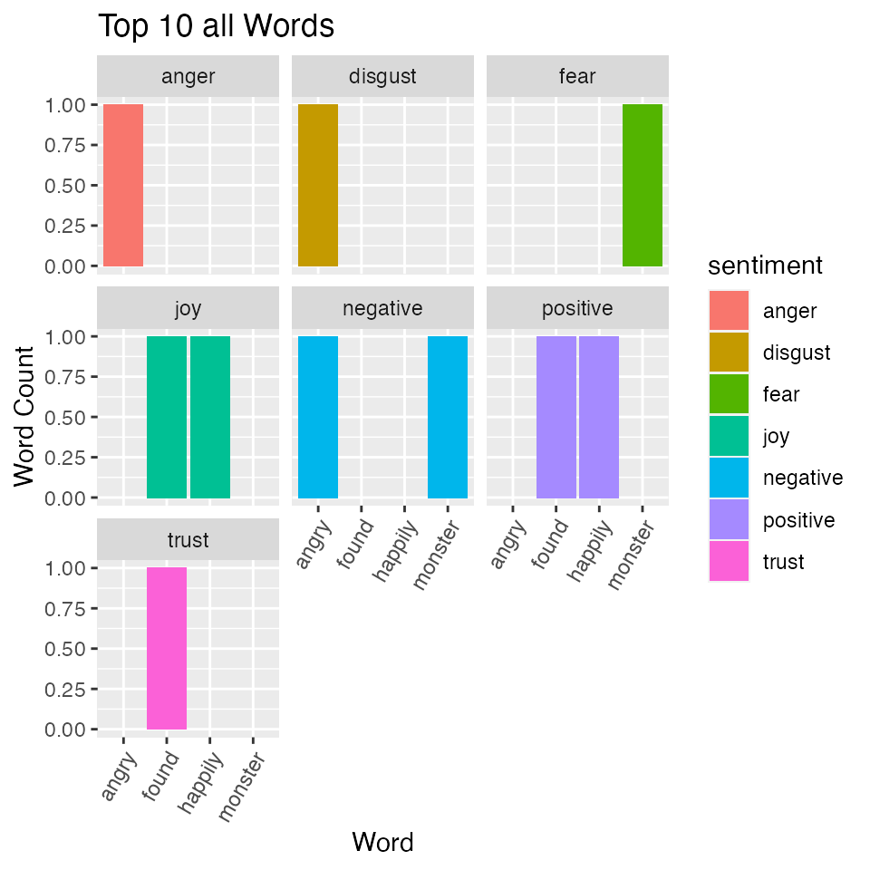
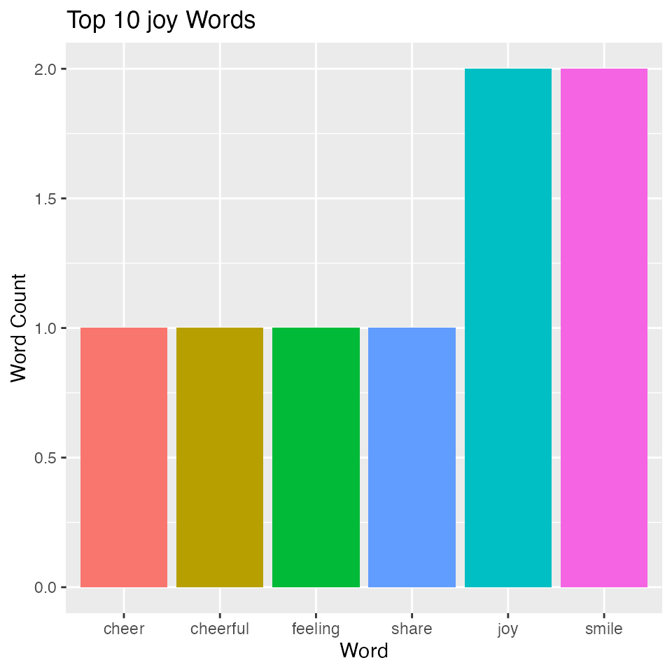

my-vignette.RmdHere is a example of how this package could be used. Let’s say there is a statement that you are trying to analyze. This is how you could implement our package. First you need to import this package with the following command:
library(remoodji)
#> Loading required package: tidyverse
#> ── Attaching packages ─────────────────────────────────────── tidyverse 1.3.0 ──
#> ✓ ggplot2 3.3.2 ✓ purrr 0.3.4
#> ✓ tibble 3.0.4 ✓ dplyr 1.0.2
#> ✓ tidyr 1.1.2 ✓ stringr 1.4.0
#> ✓ readr 1.4.0 ✓ forcats 0.5.0
#> ── Conflicts ────────────────────────────────────────── tidyverse_conflicts() ──
#> x dplyr::filter() masks stats::filter()
#> x dplyr::lag() masks stats::lag()Let’s say you have the following statement: I was happily walking. I then saw a monster and I got scared. However, when I found out it was a prank I became angry instead. To start you might want to first determine the number of characters, words, and sentences to ensure that your statement fits within guidelines.
counter('I was happily walking. I then saw a monster and I got scared. However, when I found out it was a prank I became angry instead.')
#> # A tibble: 1 x 3
#> char_count word_count sentence_count
#> <int> <int> <int>
#> 1 126 26 3After you have some insight into the length of your statement you would want to get a dataframe that will provide you with some statistics about the emotional content of your statement.
sentiment_df("I was happily walking. I then saw a monster and I got scared. However, when I found out it was a prank I became angry instead.")
#> Joining, by = "sentiment"
#> # A tibble: 12 x 5
#> word sentiment num_of_word word_sent_percentage sentiment_count
#> <chr> <chr> <int> <dbl> <int>
#> 1 angry anger 1 0.143 1
#> 2 angry disgust 1 0.143 1
#> 3 angry negative 1 0.143 3
#> 4 found joy 1 0.143 2
#> 5 found positive 1 0.143 2
#> 6 found trust 1 0.143 1
#> 7 happily joy 1 0.143 2
#> 8 happily positive 1 0.143 2
#> 9 monster fear 1 0.143 1
#> 10 monster negative 1 0.143 3
#> 11 prank negative 1 0.143 3
#> 12 prank surprise 1 0.143 1Now you might want to take this tabular / text data and turn it into a data visualization so that you can better understand the breakdown of emotions used in your statement.
sentiment_plot(text = "I was happily walking. I then saw a monster and I got scared. However, when I found out it was a prank I became angry instead.", sentiment_input = "all")
#> Joining, by = "sentiment"
Also you could change the sentiment parameter to only see words with one type of sentiment
sentiment_plot(text = "This week, show us a smile (yours or someone else's), make us smile, or both. Share a photo of something that has brought a moment of joy into your life recently, or focus on the outcome of that joy. If you're not feeling particularly cheerful at the moment — it's still 2018, after all — no need to fake your way into the challenge, either. Smiles come in all shades and flavors, including the half-hearted, tired, bitter, and resigned (to name a few). So whether the emotions you channel in your photo are full of cheer or not, I can't wait to see your take on this theme." , sentiment_input = "joy")
#> Joining, by = "sentiment"
Lastly, you might want to visualize the emotions in this statement in a different way. This packages allows you to see the emotional words replaced with corresponding emojis for each type of emotion.
textsentiment_to_emoji("I was happily walking. I then saw a monster and I got scared. However, when I found out it was a prank I became angry instead.")
#> Joining, by = "sentiment"
#> [1] "\u2795" "\u2796" "\U0001f609" "\U0001f62e" "\u2796"